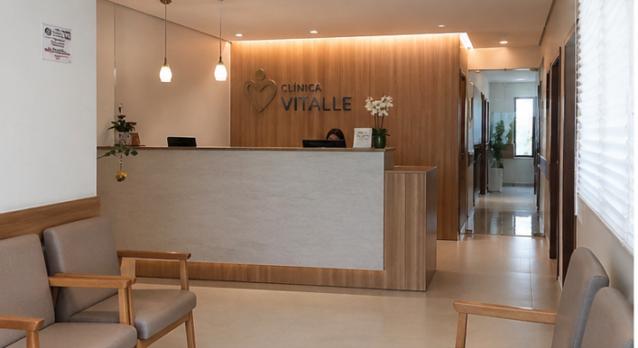
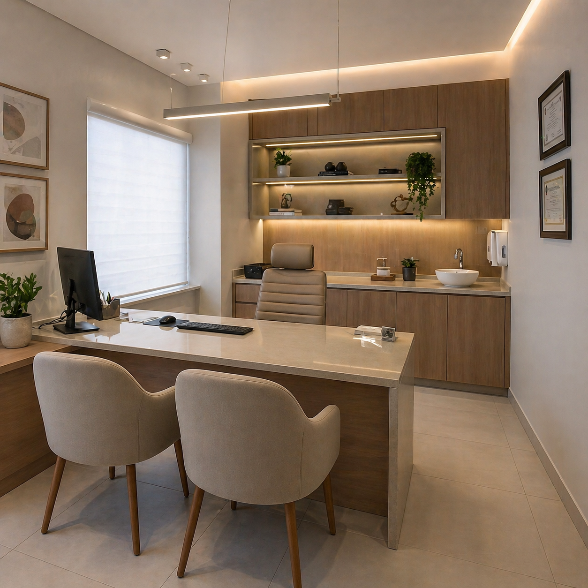
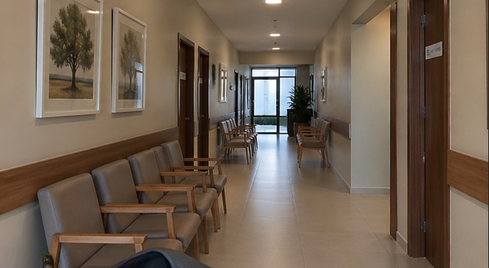
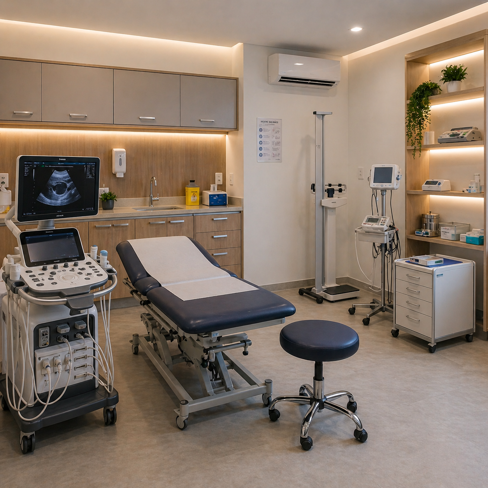

Atendimento humanizado com os melhores especialistas da região.
Agendar ConsultaA Clínica Vitalle oferece atendimento de saúde com qualidade, tecnologia e cuidado humanizado. Com equipe qualificada e estrutura moderna, atua na prevenção, diagnóstico e tratamento, sempre priorizando o bem-estar e a qualidade de vida dos pacientes.
Promover longevidade e bem-estar através de ética médica.
Ser a referência número 1 em cuidado multidisciplinar.
Ambiente moderno e profissionais altamente qualificados.
Especialista em cardiologia preventiva e arritmias.
Dedicada ao acompanhamento do desenvolvimento infantil.
Focado em traumatologia esportiva e recuperação articular.
Especialista em saúde da pele e tratamentos estéticos.
Atendimento focado em terapia cognitiva-comportamental.
Especialista em reeducação alimentar e funcional.
Oferecemos um ambiente moderno, higienizado e projetado para o seu total conforto.




Avaliações completas para diagnóstico preventivo.
Tecnologia de ponta e precisão nos resultados.
Cuidado multidisciplinar para sua saúde total.
📍 Endereço: Rua Uni Academia, 278 - Juiz de Fora - MG
🕒 Horário: Seg a Sex: 07h às 18h | Sáb: 08h às 12h